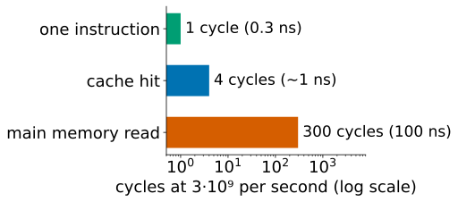
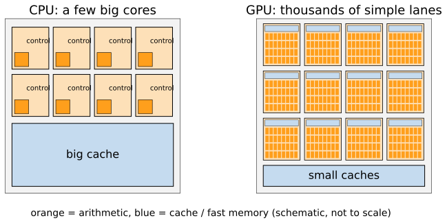
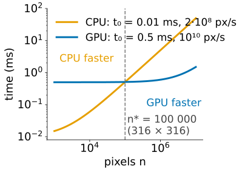
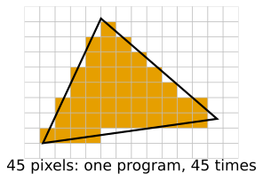
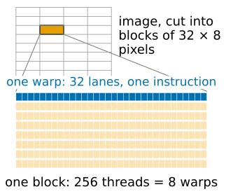
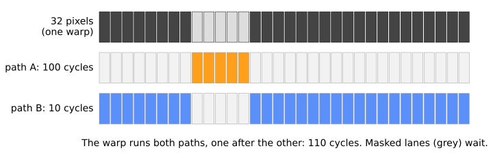
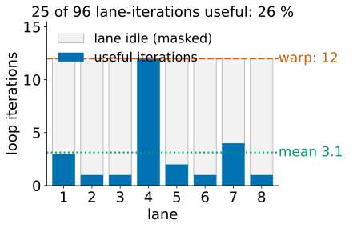
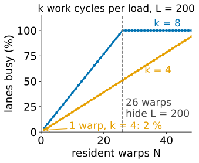

Many simple cores: throughput, warps and divergence
Image analysis
About this lecture
The same filter can run tens of times faster on a graphics processor (GPU), or slower. This day explains when and why. Today: how a GPU executes a program.
A processor in three numbers: clock, memory distance, caches.
Latency (a CPU: make one task fast) vs throughput (a GPU: many tasks at once).
SIMT: threads run in warps of 32 that share one instruction stream.
Branch divergence: when the 32 disagree, both paths are run.
Latency hiding: many warps in flight cover the slow memory (occupancy).
Slides titled The math give the formulas and proofs; the ideas are complete without them.
Try it: the same filter on the CPU and the GPU
A processor in three numbers
A processor executes instructions (add, multiply, compare, load, store) at a clock rate of about 3 \cdot 10^9 cycles per second: one simple instruction takes about 0.3 ns.
Data lives in main memory, physically far away: one read takes about 100 ns, i.e. 300 cycles of doing nothing.
Caches: small, fast memories next to the processor that keep recently used data. A hit costs a few cycles; a miss costs the full trip.

An image is far bigger than any cache: a 2048 × 2048 float32 image is 16 MB. Most of the art of fast image code is about not waiting for memory.
Latency: what a CPU core is built for
A CPU core spends most of its chip area on making one stream of instructions fast:
big caches, so most reads are hits;
out-of-order execution: while one instruction waits, later independent ones run;
branch prediction: guess which way an if goes and start on it before the answer is known.
The goal is short latency: the time from the start to the end of one task. A laptop CPU has about 8 such cores; each does 16 floating-point operations per cycle with its vector units: 8 \cdot 3\cdot10^9 \cdot 16 = 3.8 \cdot 10^{11} operations per second.
Throughput instead

A GPU spends its area on thousands of simple arithmetic lanes and accepts that each single operation is slow. The goal is throughput: tasks finished per second. 10 000 lanes at 1.5 \cdot 10^9 cycles per second, 2 operations per cycle (a fused multiply–add): 3 \cdot 10^{13} per second, 78 times the CPU.
A sports car (2 people, 200 km/h) vs a bus (50 people, 80 km/h): the bus moves 10 times more people per hour, but only if there are 50 people going the same way.
The math: latency and throughput
Time for n items with a start-up cost t_0 and a rate R: t(n) = t_0 + \frac{n}{R}.
CPU: small t_0, small R. GPU: large t_0 (moving the data, starting the program), large R.
The GPU is faster when t_0^\text{GPU} + n/R_\text{GPU} < t_0^\text{CPU} + n/R_\text{CPU}, i.e. above the break-even size n^* = \frac{t_0^\text{GPU} - t_0^\text{CPU}}{1/R_\text{CPU} - 1/R_\text{GPU}}.
Example: CPU t_0 = 0.01 ms, R = 2\cdot10^8 pixels/s; GPU t_0 = 0.5 ms, R = 10^{10} pixels/s: n^* = 0.49\text{ ms} / 4.9\text{ ns} = 100\,000 pixels, an image of about 316 \times 316.

Where GPUs come from
Drawing one frame of a 3D scene (recall the rasteriser): for every pixel a triangle covers, run the same small program (shading) with different data. Millions of independent pixels, the same instructions.
The fragment stage of the graphics pipeline is a map over pixels.
Around 2006 the hardware became programmable enough to run any such program: general-purpose GPU computing.
Image processing has exactly this shape: a filter, a threshold, a colour conversion compute every output pixel by the same rule from nearby input pixels.

You write the program for one pixel; the GPU runs it for all of them.
SIMT: warps of 32 threads
One thread per pixel (or per output value). A 2048 × 2048 image: 4 194 304 threads.
Threads are grouped in warps of 32 that execute the same instruction at the same time, each on its own data: single instruction, multiple threads (SIMT). (Some vendors call a warp a wavefront, of 32 or 64.) 2048² pixels = 131 072 warps.
Warps are grouped in blocks; a block runs on one multiprocessor, whose threads share a small fast memory (next unit). A GPU has tens of multiprocessors.
One instruction fetch and decode serves 32 lanes: that is where the saved chip area comes from.

The catch: 32 lanes, one instruction stream. What if the lanes want different instructions?
Branch divergence
if pixel > t: A (100 cycles) else: B (10 cycles)

All 32 lanes take A, or all take B: the warp runs one path.
Mixed: the warp runs A with the B-lanes masked off, then B with the A-lanes masked off. Cost = 100 + 10, not the average.
5 of 32 pixels inside: the warp spends 110 cycles; useful work 5\cdot100 + 27\cdot10 = 770 lane-cycles of 32\cdot110 = 3520 issued: 22 % efficiency.
Divergence is a property of warps, not of pixels: a uniform region costs nothing, an object boundary through a warp does.
Try it: warps and divergence
The math: how often does a warp diverge?
Each lane takes branch A independently with probability p. The warp is uniform only if all 32 agree: P(\text{mixed}) = 1 - p^{32} - (1-p)^{32}.
Expected time with costs c_A, c_B: E[T] = p^{32}c_A + (1-p)^{32}c_B + P(\text{mixed})\,(c_A + c_B).
p
0.01
0.1
0.5
P(\text{mixed})
0.275
0.966
≈ 1
E[T] (c_A = 100, c_B = 10)
37.5
106.6
110
average per pixel pc_A + (1-p)c_B
10.9
19
55
Random pixels are the worst case. Real images are coherent: a warp of 32 neighbouring pixels is mixed only where an object boundary crosses it, so the mixed fraction scales like perimeter / area.
Loops wait for the slowest lane
A loop with a data-dependent number of iterations (“iterate until converged”, “march along a ray until it is opaque”, volume rendering): the warp runs until its slowest lane is done.
8 lanes needing 3, 1, 1, 12, 2, 1, 4, 1 iterations: the warp takes 12, the average is 3.1: 26 % efficiency.
Remedies:
make branches uniform per warp: map warps to compact tiles, sort or compact the work first (unit 3);
replace a short branch by arithmetic: compute both values and select one;
split the job: a cheap pass over everything, then an expensive pass over the few pixels that need it.

Hiding memory latency
A load from global memory takes about 500 cycles. A warp that waits is parked, and the multiprocessor issues instructions from another resident warp in the meantime.
With enough warps in flight, some warp is always ready: the waiting is hidden.
Occupancy: how many warps are resident, out of the maximum. It is limited by registers and fast memory per thread: a big per-thread program means fewer warps.
A warp doing k cycles of work per load of latency L needs about (k + L)/k companions: k = 8, L = 200: 26 warps.

So a GPU needs tens of thousands of threads to be busy. A 256 × 256 image (65 536 threads) barely fills it; a 64 × 64 image cannot.
The math: how much must be in flight (Little’s law)
Little’s law (queueing theory): items in a system = arrival rate × time each one spends there. For memory: \text{bytes in flight} = \text{bandwidth} \times \text{latency}.
Bandwidth \beta = 1 TB/s, latency L = 500 ns: \beta L = 500 kB must be requested and not yet arrived at every moment.
At 4 bytes per thread: 125\,000 threads waiting at once.
One multiprocessor, one instruction per cycle: N warps with k compute cycles per load are busy a fraction U \approx \min\!\Big(1, \frac{N k}{k + L}\Big).
Try it: latency hiding
Summary
A CPU minimises latency (one task fast); a GPU maximises throughput (many tasks per second) with thousands of simple lanes.
Work is written per pixel; threads run in warps of 32 that share one instruction stream (SIMT).
Divergence: a warp whose lanes disagree runs every path taken; loops wait for the slowest lane. Coherent images diverge only along boundaries.
Memory is hundreds of cycles away; the GPU hides it by switching between many resident warps (occupancy). It needs tens of thousands of independent threads.
GPUs are fast for many independent, identical, simple tasks; slow when tasks depend on each other, disagree, or are few.